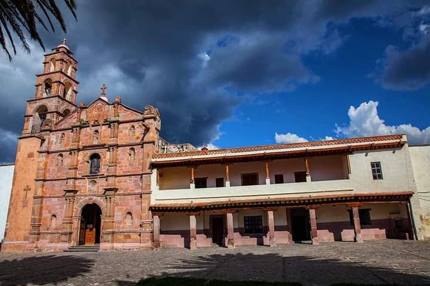
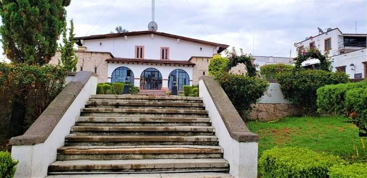
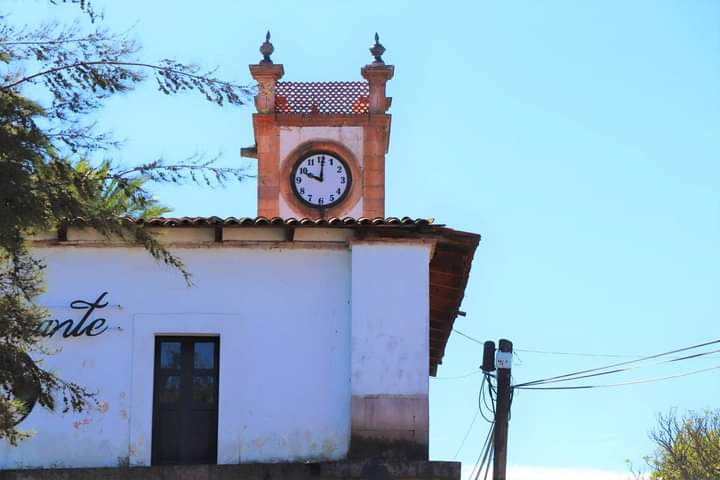
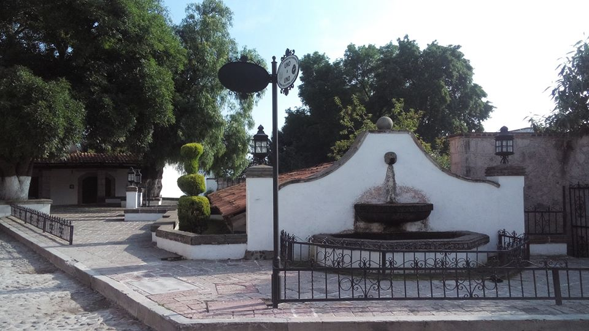
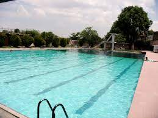
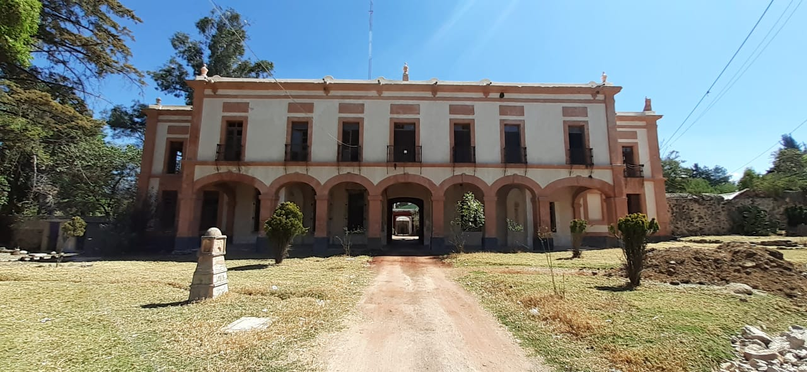
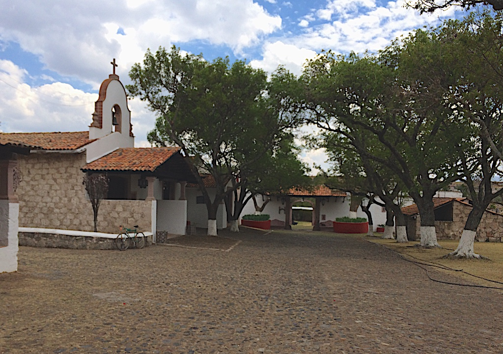
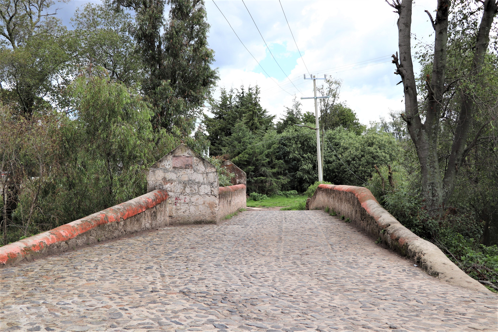
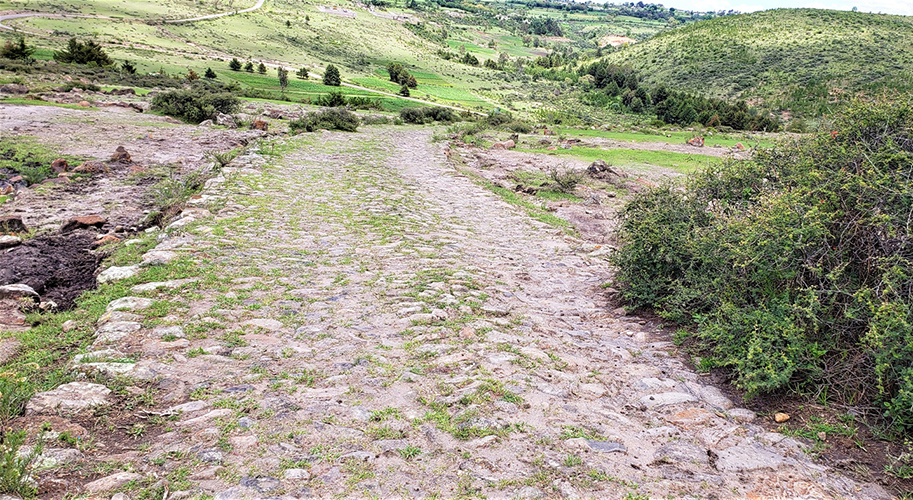

A Disfrutar Aculco
Aculco que en Náhuatl significa "Donde el agua tuerce"
Parroquia y Convento de San Jeronimo
Volver al índice 

Ubicación 
En un amplio atrio circulado por vetuscos muros se levantan la Parroquia y Convento de San Jeronimo. Es este un bello templo franciscano de estilo Tetiqui del año 1540 que consigna el trabajo de los canteros de la region. El templo resguarda entre sus tesoros imagenes antiguas, lienzos y retablos de santos y alegorías de contenido místico y de forma notable, el archivo parroquial desde pricipios del Siglo XVII.
Palacio Municipal
Volver al índice 

Ubicación
Es un bello y moderno edificio de los años 70´s construido con la cantera blanca que predomina en las edificaciones de Aculco y que conbinado con el color blanco de sus muros le da al pueblo la filosofia propia de un lugar unico
Relog Publico
Volver al índice 

Se trata de una elevada torre constituida en el año 1904 con un gran relog inglés de una sola cara que puntualmente, desde entonces, con campanas muy sonoras masca las horas y decora la parte sur de los muros de la Parroquia de San jeronimo
Mercado Municipal "Miguel Hidalgo"
Volver al índice 

Ubicación
Su construcción fue realizada con un gran proyecto aprovechando artisticamente los materiales de la region.
En cuestion de gastronomia ofrece lo mas selecto de la comida regional en pequeñas fondas y cocinas muy bien establecidas con exelente servicio, convirtiendo este sitio en un gran atractivo turistico.
Lavaderos
Volver al índice 

Ubicación
Su construcción fue realizada con un gran proyecto aprovechando artísticamente los materiales de la región.
En cuestión de gastronomía ofrece lo más selecto de la comida regional en pequeñas fondas y cocinas muy bien establecidas con excelente servicio, convirtiendo este sitio en un gran atractivo turístico.
Alverca
Volver al índice 

Ubicación
Santuario del Señor de Nenthé
Volver al índice 
.jpg)
.jpg)
Ubicación
"De la mano y cincel de Felipe Ramírez" Es la leyenda que consigna la placa que luce uno de los muros de la fachada del Santuario del Señor de Nenthé, que en otomí significa "fuente de agua" y que originalmente fuera edificado en el Siglo XVIII y reconstruido casi en su totalidad en los años 40 del Siglo XX, conservando el estilo árabe de su arquitectura original.
Hacienda de Arroyozarco
Volver al índice 

Ubicación
Originalmente ofreció servicios de hospedaje a los viajeros en el Mesón de Lorenzo Espino desde el año 1576 y tiempo más tarde en 1786 abre sus puertas el afamado HOTEL DE DILIGENCIAS que actualmente está en estado ruinoso.
Hacienda Cofradia Chica
Volver al índice 

Ubicación
Fue establecida con la finalidad de la vocación agrícola y ganadera. La cual fue vendida en almoneda publica por la real Hacienda y en el Siglo XIX fue adquirida por la familia de Doña Sara Pérez esposa del presidente Francisco I Madero.
Hacienda de Ñado
Volver al índice 

Ubicación
A principios del siglo XIX, la conmoción de la Guerra de Independencia le alcanzó cuando por sus encinares huyeron los hombres de Hidalgo, derrotados por vez primera en Aculco ante el general Calleja.
El Puente Blanco
Volver al índice 

Es una bella construcción del Siglo XVIII construido en cantera blanca para permitir la comunicación entre el pueblo y las diversas derivaciones.
El Puente Colorado
Volver al índice 

Ubicación
Es una bella construcción del Siglo XX, aun cuando está en servicio requiere ser restaurado. Su nombre obedece al color que anteriormente lució y del que todavía quedan vestigios.
Camino Real de Tierra Adentro
Volver al índice 

Ubicación
Trazado por los conquistadores españoles de la Nueva España es considerado el más extenso y antiguo de América con cerca de 2,900 kilómetros, patria de la Ciudad de México y llegada a su fin Santa Fe, en el lejano México
Por ese camino transcurrieron campañas militares, evangelización, bienes, mercancías e ideas, conocimientos, creencias que pronto establecieron un complejo sistema económico y cultural.